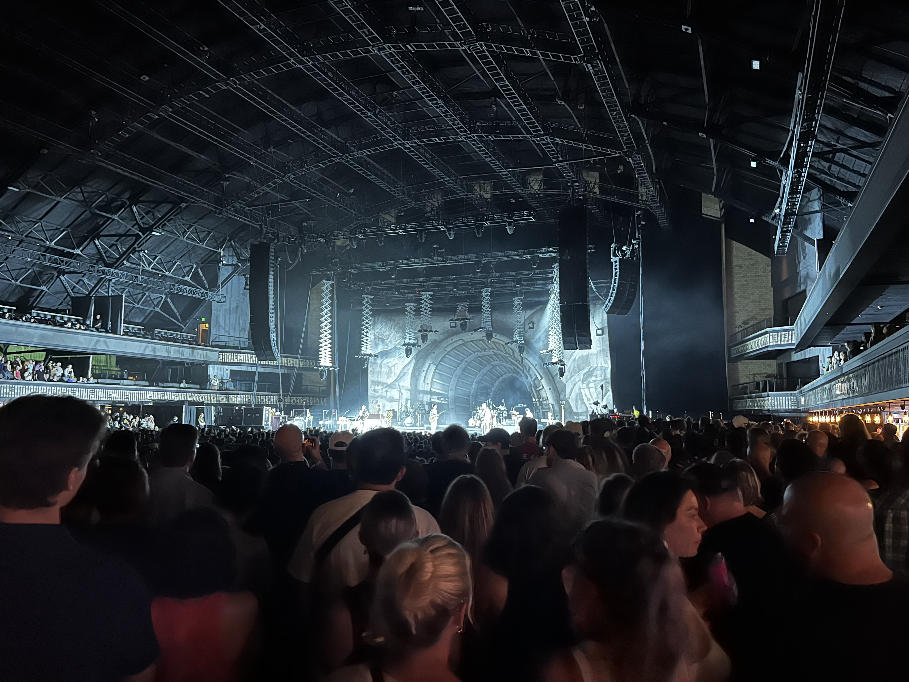

Five Years
music
Life updates since my previous post
Earlier this week I was lucky enough to see Vampire Weekend perform at the Armory in Minneapolis. As they wrapped up their second song lead singer, Ezra Koenig, spoke to the crowd and said “It’s been five years since we were last in Minneapolis. Can you believe it’s been five years?” And the answer is, no. I really couldn’t believe it had been five years. The following morning I scrolled through my photos and found a picture I took from their previous concert. Sure enough, the date said summer of 2019. It is kind of astounding how long I have been listening to Vampire Weekend. I recall watching the music video for “Oxford Comma” on MTV in high school (I think). Their first album, self-titled Vampire Weekend, came out in 2008. More than a decade later, I’m still a fan and having the pleasure to see them perform a second time.
When they last came to Minneapolis, they were supporting their fourth album–Father of the Bride–and were also playing at the Armory. It was my first time seeing them live after many years of waiting to do so. I was nervous. I’m not one to usually get nervous, but I was afraid that it wouldn’t live up to the hype. I dedicated years listening to their music, following them on social media, and arguing in defense of them. What if their live performances are terrible? Rostam Batmanglij (producer and guitarist) had left the band. What if he was the real driving force? I don’t know. But once the band got on stage, I forgot about any premeditated fears. I hadn’t particularly cared for the new album, but seeing it live changed my mind and perception. It’s silly to think back now about how worried I was. The setlist was immaculate. Intertwined with hits and deep cuts, enough to satisfy the people who just wanted to hear “A-Punk” and the die hard fans who want to experience a 9 minute version of “Diplomat’s Son”. The encore, a sometimes cheesy experience, somehow outdid any expectation I could have ever had. They took requests of any Vampire Weekend songs and played them. What? This is what long time fans of any band would kill to experience. Atop the music was an incredible stage design and sound mixing. So, that was my first time seeing Vampire Weekend perform live.
Five years later, I’m at the Armory again. This time they’re supporting the release of their fifth album, Only God Was Above Us, to a sold out crowd on a Tuesday night. This time around I had a different sensation of nervousness. It was one of anticipation. I was eager to see what they would do this time around. Will they do another encore set of requests? What deep cuts are going to make the set list this time? They’re changing the setlist every night, I wonder what we’re going to get? When it was time for them to start, the founding trio consisting of lead vocalist and guitarist Ezra, bassist Chris Baio, and drummer Chris Thompson, walked onto the dim stage, behind them a large black backdrop with the band’s name printed on in bold white font. The crowd grows quiet while the air begins to fill with excitement. With no warning the crowd gets hit with “I see a mansard roof through the trees” as the band kicks off with their first song. The trio plays a few songs off of their first two albums, as if to harken back to the days before they had access to complex and rich harmonies and instrumentation. As they play their final song as a trio, the backdrop falls to reveal a giant mountain tunnel and the remaining touring band members.
Vampire Weekend’s set started at 8:45pm and went until 11pm. Nearly two hours of music varied enough to satisfy all fans of their music. Perhaps the most incredible feature of the show was their ability to reinvigorate classics through a new lens. We got an extended version of “Bambina” played as a pop-punk song, “Sunflower” got the full psychedelic jam band treatment which flowed between ska, indie rock, and electronic music. They ended their set with a song off of their new album, “Hope,” and vamped the end with each stage member bowing, stepping off the stage, walking through the tunnel as their spotlight goes out while the remaining stage members continue the vamp. At the end we are left with just the bass carrying on the final moments before he too walks away into the tunnel. I don’t know what their intention was with this ending, but I felt a deep sadness as I saw each member step off stage. As if they were truly saying goodbye and this would be my last time seeing them again.
Of course after a minute of darkness, they all came right out of the tunnel ready for the encore. I’m giddy with excitement, hoping that they’ll repeat their encore requests as they did five years ago. To my surprise, they weren’t just taking requests of Vampire Weekend songs, they were taking requests of any song. Whether they knew how to play it or not. The result was a chaotic, funny, and impressive medley of songs that the band expertly carried along while Ezra found the right words. Fans were treated with two Vampire Weekend songs to finish the encore, as if the band knew they couldn’t end on a completely fun note. Five years had passed between the two shows. I’m in a much different place and a much different person than I was five years ago. However, I find it comforting to see a band I’ve known of for so long to grow and become different alongside me. It’s like seeing a friend from high school, that although we don’t see each other often, we can pick up right where we left off.
